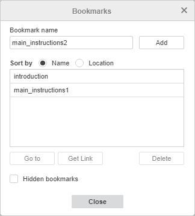
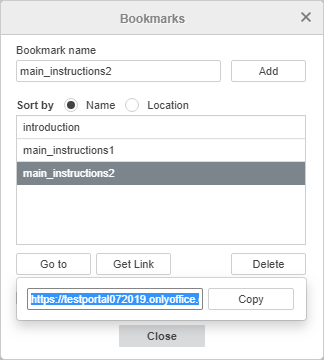

Dodavanje oznaka
Oznake omogućavaju brz pristup određenom delu teksta ili dodavanje linka ka toj lokaciji u dokumentu.
Da biste dodali oznaku u Document Editor:
- odredite mesto gde želite da se oznaka doda:
- postavite kursor na početak potrebnog pasusa teksta, ili
- selektujte odgovarajući pasus teksta,
- prebacite se na Referencije karticu u gornjoj alatnoj traci,
- kliknite na Oznaka ikonu u gornjoj alatnoj traci,
- u Prozor za oznake unesite Naziv oznake i kliknite Dodaj - oznaka će biti dodata u listu oznaka ispod,
Napomena: naziv oznake treba da počinje slovom, ali može sadržati i brojeve. Naziv oznake ne može sadržati razmake, ali može uključiti znak donje crte "_".

Da biste pristupili jednoj od dodatih oznaka u tekstu:
- kliknite na Oznaka ikonu na Referencije kartici gornje alatne trake,
- u Prozoru za oznake izaberite oznaku kojoj želite da pristupite. Da biste lakše pronašli željenu oznaku u listi, možete sortirati listu po Nazivu ili Lokaciji u tekstu,
- čekirajte opciju Skriveni bookmarkovi da bi se prikazale skrivene oznake u listi (tj. oznake koje program automatski kreira prilikom dodavanja referenci na određeni deo dokumenta. Na primer, ako napravite hiperlink ka određenom naslovu u dokumentu, editor automatski kreira skriveni bookmark ka ciljanoj lokaciji).
- kliknite Idi na dugme - kursor će biti postavljen tamo gde je izabrana oznaka dodata ili će biti selektovan odgovarajući pasus teksta,
-
kliknite Preuzmi link dugme - otvoriće se novi prozor gde možete kliknuti Kopiraj da biste kopirali link do fajla koji određuje lokaciju oznake u dokumentu. Kada nalepite ovaj link u adresnu liniju pretraživača i pritisnete Enter, dokument će biti otvoren na mestu gde je dodata odabrana oznaka.

Napomena: ako želite da podelite ovaj link sa drugim korisnicima, potrebno je da im obezbedite odgovarajuća prava pristupa koristeći opciju Deljenje na Saradnja kartici.
- kliknite Zatvori dugme da zatvorite prozor.
Da obrišete oznaku, izaberite je u listi i kliknite Obriši.
Da biste saznali kako koristiti oznake prilikom kreiranja linkova, pogledajte odeljak Dodavanje hiperlinkova.